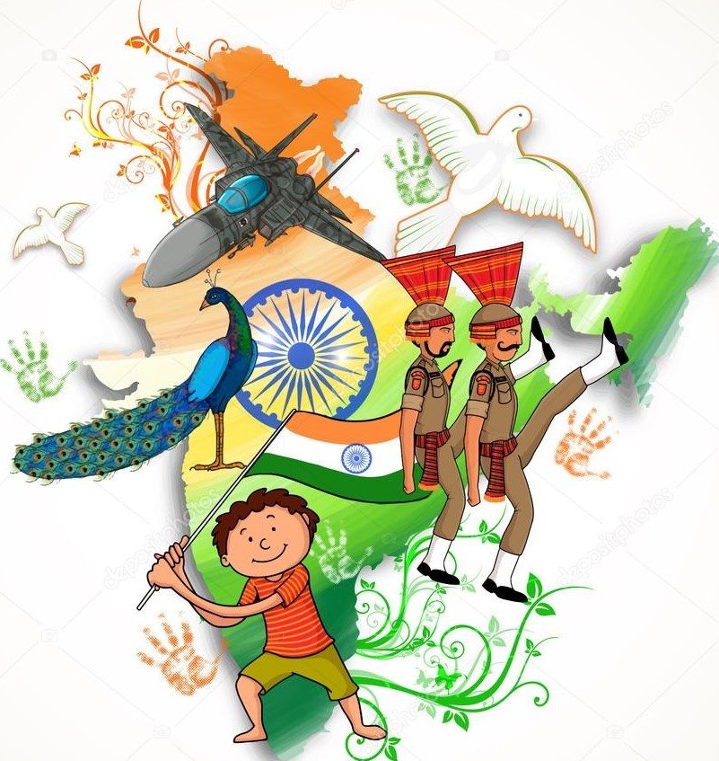
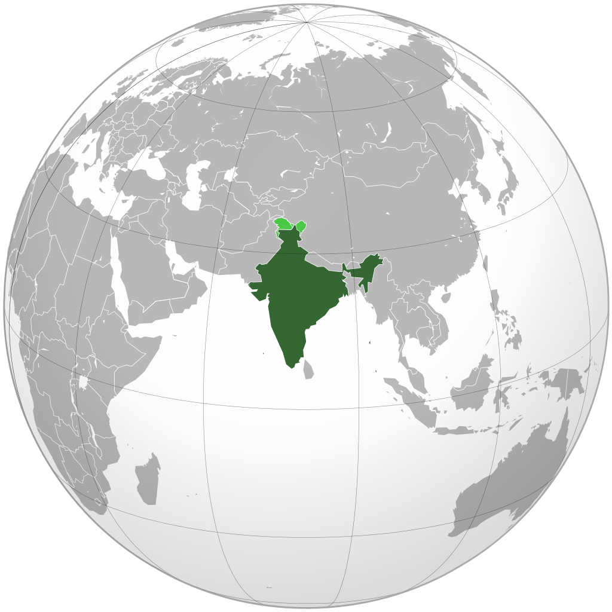
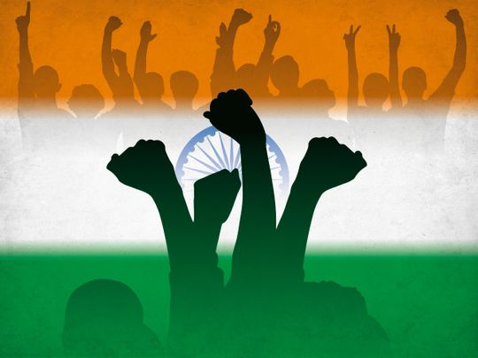

|  |
India is a great country where people speak different languages but the national language is Hindi. India is full of different castes, creeds, religion, and cultures but they live together. That’s the reasons India is famous for the common saying of “unity in diversity“. India is also well known as the land of spirituality, philosophy, science, and technology. India is the seventh-largest country in the whole world. Geography and CultureIndia has the second-largest population in the world. India has 29 states and 7 union territories. India is also knowns as Bharat, Hindustan and sometimes Aryavart. It is surrounded by oceans from three sides which are Bay Of Bengal in the east, the Arabian Sea in the west and Indian oceans in the south. Tiger is the national animal of India. Peacock is the national bird of India. Mango is the national fruit of India. “Jana Gana Mana” is the national anthem of India. “Vande Mataram” is the national song of India. Hockey is the national sport of India. People of different religions such as Hinduism, Buddhism, Jainism, Sikhism, Islam, Christianity and Judaism lives together from ancient times. India is also rich in monuments, tombs, churches, historical buildings, temples, museums, scenic beauty, wildlife sanctuaries, places of architecture and many more. The great leaders and freedom fighters are from India. Our country, India, lies in South Asia. It is a large country that is home to approximately 139 crore people. Moreover, India is also the biggest democracy in the whole world. Having one of the oldest civilizations, it is a very rich country. Our country has fertile soil that makes it the largest wheat producer in the whole world. India has given birth to famous personalities in the field of literature and science. For instance, Rabindranath Tagore, CV Raman, Dr Abdul Kalam, and others are Indians. It is a country that is home to thousands of villages. Similarly, the fields of India are fed by the mighty rivers. For instance, Ganga, Kaveri, Yamuna, Narmada, and more are rivers of India. Most importantly, the coasts of our country are guarded by the deep oceans and the mighty Himalayas are our natural frontiers. |
|
The culture of our country is immensely rich and famous worldwide. The different languages we speak and the different Gods we worship does not create differences between us. We all share the same spirit. The spirit of India runs throughout the country. Further, India is famous for having a lot of tourist spots. For instance, the Taj Mahal, Qutub Minar, Gateway of India, Hawa Mahal, Charminar, and more are quite popular. These attractions bring together people from all over the world. Similarly, we have Kashmir which is known as paradise on earth. The natural beauty of Kashmir, the mighty rivers and gorgeous valleys truly make it a paradise. Besides that, India is famous for having a very rich food culture. There are so many cuisines found within our country that it is not possible to have it all in one trip. We get to have the best of everything due to the richness. |
 |

|
Flag of IndiaThe Indian flag has tricolors
The first color that is uppermost color in the flag which is the saffron color, stands for purity. The second color i.e. the middle color in the flag is the white color and it stands for peace. The third color that is the lowest color in the flag is the green color and it stands for fertility. The white color has an Ashoka Chakra of blue color on it. Ashoka Chakra contains twenty-four spokes which are equally divided. All in all, our country has a thousand-year-old culture. It is also given the world the gifts of yoga and Ayurveda. Besides that, India has contributed significantly to the field of science, music, maths, philosophy, and more. It is an essential country in almost every sphere globally. |
Democracy in IndiaFirst of all, democracy refers to a system of government where the citizens exercise power by voting. Democracy holds a special place in India. Furthermore, India without a doubt is the biggest democracy in the world. Also, the democracy of India is derived from the constitution of India. After suffering at the hands of British colonial rule, India finally became a democratic nation in 1947. Most noteworthy, Indian democracy since independence is infused with the spirit of justice, liberty, and equality. Features of Indian DemocracySovereignty is a vital feature of Indian democracy. Sovereignty refers to the full power of a governing body over itself without outside interference. Moreover, people can exercise power in Indian democracy. Most noteworthy, people of India elect their representatives. Moreover, these representatives remain responsible for common people. The democracy in India works on the principle of political equality. Furthermore, it essentially means all citizens are equal before the law. Most noteworthy, there is no discrimination on the basis of religion, caste, creed, race, sect, etc. Hence, every Indian citizen enjoys equal political rights. |

|
|  |
Rule of the majority is an essential feature of Indian democracy. Moreover, the party which wins the most seats forms and runs the government. Most noteworthy, no-one can object to support of the majority. Another feature of Indian democracy is federal. Most noteworthy, India is a union of states. Furthermore, the states are somewhat autonomous. Moreover, the states enjoy freedom in certain matters. Collective responsibility is a notable feature of Indian democracy. The council of Ministers in India is collectively responsible to their respective legislatures. Therefore, no minister alone is responsible for any act of their government. Indian democracy works on the principle of formation of opinion. Furthermore, the government and its institutions must work on the basis of public opinion. Most noteworthy, public opinion must be formed on various matters in India. Moreover, the Legislature of India provides an appropriate platform to express public opinion. |
|
India is called incredible because despite being diverse in terms of religion, people, cultures, and beliefs, they all live in harmony. The natural heritage of the country is unique to the world as no nation else possesses all the landforms namely forests, deserts, snow-clad areas, and mountains all in the same country which is a striking feature of India. The maritime extent of the country is huge making it a peninsular nation and a world destination for traveling. Above all, what makes India incredible is the incredible people of the country and their love for their motherland. The country's advancement in science and technology cannot be ignored and is admired all over the world for its efficiency and quality along with affordability. The country has also given the world a number of sports that are enjoyed throughout the world. Its unique position amongst the top-ranking nations makes it important for the world to rely upon as a source of help and resources. India along with being incredible is an important country not only for Indians but for the entire world. |
|
This section introduces you to the National Identity Elements of India. These symbols are intrinsic to the Indian identity and heritage. Indians of all demographics backgrounds across the world are proud of these National Symbols as they infuse a sense of pride and patriotism in every Indian's heart.

The state emblem is an adaptation from the Sarnath Lion Capital of Ashoka. In the original, there are four lions, standing back to back, mounted on an abacus with a frieze carrying sculptures in high relief of an elephant, a galloping horse, a bull and a lion separated by intervening wheels over a bell-shaped lotus. Carved out of a single block of polished sandstone, the Capital is crowned by the Wheel of the Law (Dharma Chakra).

Hockey is the national sport of India. The remarkable performance of the Indian hockey team in the Olympics prompted the Ministry of Youth Affairs and Sports to declare it the National game of India. The Indian team had won 8 gold medals,1 silver,and 3 bronze medals between 1928 and 1956.

The song Vande Mataram, composed in Sanskrit by Bankimchandra Chatterji, was a source of inspiration to the people in their struggle for freedom. It has an equal status with Jana-gana-mana. On January 24, 1950, the President, Dr. Rajendra Prasad came up with a statement in the Constituent Assembly, "the song Vande Mataram, which has played a historic part in the struggle for Indian freedom, shall be honoured equally with Jana Gana Mana and shall have equal status with it." The first political occasion when it was sung was the 1896 session of the Indian National Congress. The song was a part of Bankimchandra's most famous novel Anand Math (1882).